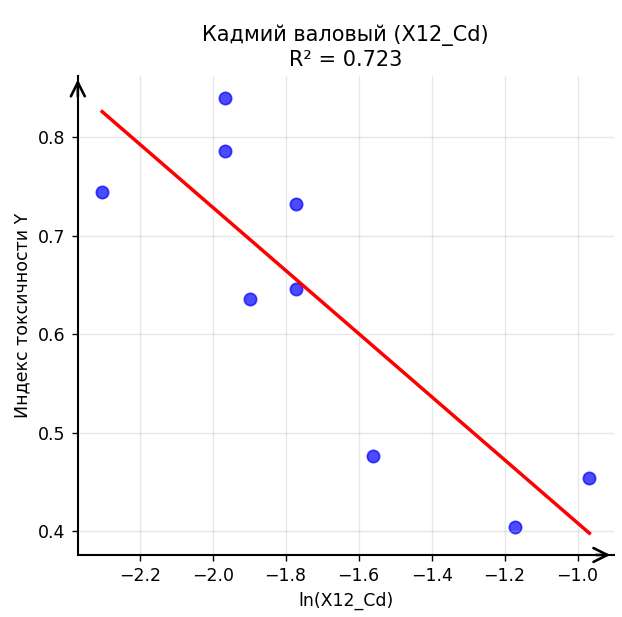
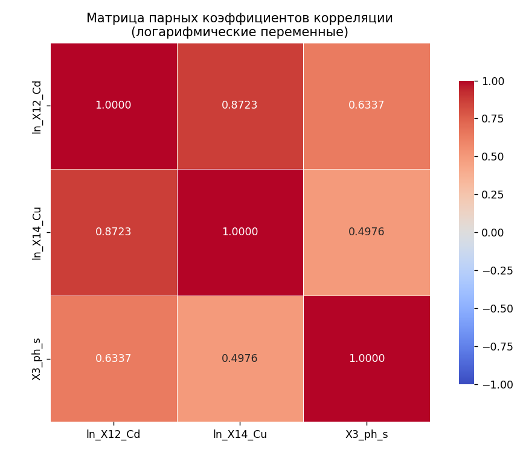

Проблема загрязнения почв тяжелыми металлами и химикатами стоит остро, особенно вблизи заводов и дорог. Традиционный анализ токсичности требует дорогостоящих исследований. Целью данного курсового проекта является построение регрессионной модели, позволяющей прогнозировать индекс токсичности почвы на основе простых и доступных показателей, таких как кислотность и содержание органики. Это позволит быстро и недорого проверять большие территории.
Для анализа использовались данные 9 участков города Киров. В работе применялись следующие методы и инструменты:
На первом этапе были рассчитаны парные коэффициенты корреляции для четырех типов преобразований факторов (линейная, полулогарифмическая, экспоненциальная, гиперболическая). Наибольшую связь с индексом токсичности показали:
Однако между кадмием и медью была обнаружена высокая корреляция (r = 0.872), что указывает на мультиколлинеарность. Для получения устойчивой модели было решено исключить медь и оставить кадмий и pH.

Рисунок 1. Зависимость индекса токсичности от логарифма валового содержания кадмия

Рисунок 2. Матрица парных коэффициентов корреляции отобранных факторов
Финальная регрессионная модель имеет вид:
Y = 0.5622 - 0.2404 * ln(X12_Cd) - 0.0579 * X3_ph_s
Основные показатели качества модели представлены в таблице:
| Показатель | Значение | Интерпретация |
|---|---|---|
| R² | 0.7903 | Модель объясняет 79% дисперсии индекса токсичности |
| F-статистика | 11.30 | Модель статистически значима (p = 0.0092) |
| p-value (X12_Cd) | 0.0385 | Коэффициент при кадмии значим на уровне 5% |
| p-value (X3_ph_s) | 0.2151 | Коэффициент при pH незначим, но сохранен по теоретическим соображениям |
В ходе работы была построена модель, позволяющая с высокой точностью прогнозировать токсичность почвы на основе двух показателей: валового содержания кадмия и pH солевой вытяжки. Это подтверждает возможность замены дорогостоящего анализа тяжелых металлов на более простые и дешевые методы мониторинга.